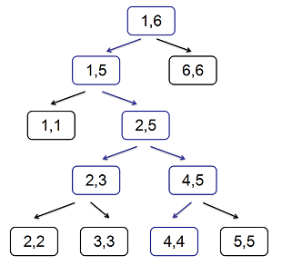

Sylvia 是一个热爱学习的女孩子，今天她想要学习线段树技巧。
但是因为 Sylvia 是还是萌新，所以她一不小心将线段树写成了奇怪的形状：
在正常的线段树中，对于区间 $[l, r]$，我们会取 $m = \left \lfloor \dfrac {l+r} 2 \right \rfloor$，然后将这个区间分成 $[l, m]$ 和 $[m+1, r]$ 两个子区间。
但是，Sylvia 的线段树却不是这样的，她用了一种不可描述的方式取了 $m$ 的值 (当然 $m$ 还是满足 $l \leq m < r$ 的)，以至于整棵树的形状非常奇怪。
奇怪归奇怪，这棵线段树仍然是可以进行线段树的操作的，就比如下面这棵在 $[1, 6]$ 上建的奇怪的线段树，我们仍然可以用传统的线段树算法定位出一些区间 (只不过不再满足 $\log$ 的复杂度了)，以区间 $[2, 4]$ 为例，那么定位的过程如蓝色箭头所示，经过的节点为蓝色节点。
现在 Sylvia 建出了一棵奇怪的线段树，最开始所有点都是白色的。接着 Sylvia 对这棵线段树进行了若干次操作，每次操作都给出了一个区间 $[l, r]$ 并在线段树上定位出这个区间，在定位的同时，它把经过的节点都染黑了 (本来就是黑的节点仍然保持黑色)。
例如对上面这棵线段树，第一次操作为 $[2, 4]$，那么在操作后所有蓝色节点都被染黑了。
但是因为 Sylvia 是一个健忘的女孩子，过了一段时间后，她已经忘了她到底进行了哪些操作，但是幸运的是最终的线段树还是被保留了下来。
现在 Sylvia 想要知道她最少进行多少次操作，才能将本来全白的线段树变成现在这样。
第一行包含一个正整数 $n$ 表示线段树的根节点为 $[1, n]$。
接下来 $2n - 1$ 行，按照线段树的先序遍历描述了每一个节点，如果这个节点是叶子节点，那么这一行只有一个整数 $t_i$，否则这一行有两个整数 $t_i$ 和 $m_i$。
其中 $t_i$ 如果是 $1$ 表示这个节点是黑色的，否则表示这个点是白色的。$m_i$ 表示建树时这个节点划分子区间的临界点，如果当前区间为 $\left[ l_i, r_i \right]$，保证 $l_i \leq m_i < r_i$。
聪明的 Sylvia 发现给出这些信息是可以唯一确定一棵奇怪的线段树的，所以她决定就以这种格式来告诉你这些信息。
输出一行表示答案，因为 Sylvia 是一个粗心的女孩子，所以可能存在无解的情况，这时只要输出 OwO 就好了。
对于线段树中的非根节点，如果它是它的父节点的左子节点，我们称它为左节点，否则称它为右节点。
撕烤一下我们在线段中定位一个区间的过程，可以发现，(对于非全集的区间) 最终所得到的若干个区间，如果从左到右书写的话，一定是一堆右节点紧跟着一堆左节点。
能够注意到，对于所有的左节点，它们对应的区间的右端点互不相同，对右节点也是同理。因此，如果存在相邻两个区间分别为左节点、右节点，说明左节点的右端点 $+ 1$ 等于右节点的左端点 $- 1$，于是这两个节点就是同一个节点的两个子节点，这与线段树定位原理矛盾。
于是，一个 $[1, n]$ 的真子区间可以对应到一些右节点和左节点的并 (确切地说应该是连接，Concatenation)。
反过来，如果有一些连续的右节点、紧随着一些连续的左节点，则它们的连接恰好就是 $[1, n]$ 的一个真子区间。
下面回到原题。
对于一个节点，如果它是白色的，而它的子节点是黑色的，则一定会无解。同时，这个条件也是充分的。
如果不存在这种情况，则所有黑色节点的父节点都是黑色节点，此时，我们只需要对所有的黑色节点进行一次定位即可。
那现在我们就要考虑最小化的问题了。
注意到，如果一个节点的子节点中有黑色节点，我们可以不考虑它，因为当它的子节点被染黑后，它自然就变黑了。因此，我们可以只考虑子节点都是白色节点的黑色节点。
由上面的结论，任何一个区间，都一一对应着一些连续的右节点和左节点的连接。因此，我们就是要寻找最小数量的这样的 "连接"，使得所有黑色节点均被覆盖。
类似 [NOI2015]小园丁与老司机 的方法，考虑使用有源汇有界最小流进行建模。对于每个需要考察的 (子节点都是白色的) 黑色节点，由于它必须经过，因此它的点容量下界应该为 $1$。具体实现时可以将它裂边，中间连一条容量下界为 $1$ 的边。
对于每个黑色节点，从源点向它连边，再从它向汇点连边。至于节点之间的连接，可以将所有可行节点对 (右-右，左-左，右-左) 之间连边，这些边的边权均为 $0$。最后这张图的最小流就是答案。
但是这样边数将会是 $O \left( n^2 \right)$ 的：由于右节点的右端点可能有大量相同，左节点的左端点也可能大量相同，然后这两个一乘，就直接爆炸了。
但我们发现，这些连边有一个共同点：都是区间 $[x, t]$ 和 $[t + 1, y]$ 连边。
我们不妨把它拆掉，对每个点建立一个 "中转站" $T_t$，然后从 $[x, t]$ 向 $T_{t+1}$ 连边，然后从 $T_{t+1}$ 向 $[t + 1, y]$ 连边。
要注意的是，这里的 "中转站" 有两类，因为需要区分是否已经到达了左节点。
这样连边的边数就到达了 $O \left( n \right)$，总时间复杂度为 $O \left( n^2 \right)$。
#include <bits/stdc++.h>
const int N = 4100;
struct node {
int col, L, R, f, lc, rc;
node (int _c = 0, int _L = 0, int _R = 0, int _f = 0) : col(_c), L(_L), R(_R), f(_f), lc(0), rc(0) {}
} x[N * 4];
int n, cnt = 0;
namespace Flow {
#define ad(x) ((x - 1 ^ 1) + 1)
const int N = 25000, M = 800000;
struct edge {
int u, v, f;
edge (int u0 = 0, int v0 = 0, int f0 = 0) : u(u0), v(v0), f(f0) {}
} e[M];
int V = 2, E = 0, si = 1, ti = 2, flow;
int first[N], next[M], deg[N];
int dep[N], cur[N], que[N];
inline void addedge(int u, int v, int f) {
e[++E] = edge(u, v, f); next[E] = first[u]; first[u] = E;
e[++E] = edge(v, u); next[E] = first[v]; first[v] = E;
}
bool bfs() {
int h, t = 1, i, x, y;
memset(dep, -1, sizeof dep);
que[0] = si; dep[si] = 0;
for (h = 0; h < t; h++){
if ((x = que[h]) == ti) return true;
for (i = first[x]; i; i = next[i])
if (dep[y = e[i].v] == -1 && e[i].f) {
que[t++] = y;
dep[y] = dep[x] + 1;
}
}
return false;
}
int dfs(int x, int lim) {
int a, c, f = 0;
if (x == ti || !lim) return lim;
for (int &i = cur[x]; i; i = next[i])
if (dep[e[i].v] == dep[x] + 1 && e[i].f) {
a = std::min(lim - f, e[i].f);
c = dfs(e[i].v, a);
e[i].f -= c; e[ad(i)].f += c;
if((f += c) == lim) return f;
}
return f;
}
int Dinic() {
for (flow = 0; bfs(); flow += dfs(si, INT_MAX))
memcpy(cur, first, sizeof cur);
return flow;
}
}
inline void link(int u, int v, int l) {Flow::addedge(u, v, INT_MAX); Flow::deg[v] += l; Flow::deg[u] -= l;}
int MinFlow() {
using Flow::deg;
int i, sum = 0;
for (i = 3; i <= Flow::V; ++i)
if (deg[i] > 0) sum += deg[i], Flow::addedge(1, i, deg[i]);
else if (deg[i] < 0) Flow::addedge(i, 2, -deg[i]);
return sum - Flow::Dinic();
}
int build(int L, int R, int f = -1) {
int id = ++cnt, c, M;
scanf("%d", &c); x[id] = node(c, L, R, f);
if (L == R) return id;
scanf("%d", &M);
x[id].lc = build(L, M, 0);
x[id].rc = build(M + 1, R, 1);
if (x[id].lc[x].col || x[id].rc[x].col) {
if (!x[id].col) return puts("OwO"), exit(0), 0; x[id].col = -1;
}
return id;
}
int main() {
int i, c, d, L, R, f;
scanf("%d", &n); c = Flow::V = 2 * n + 4;
build(1, n); Flow::V += cnt;
for (i = 1; i <= cnt; ++i)
if (++c, x[i].col) {
L = x[i].L; R = x[i].R; f = x[i].f;
x[i].col == 1 ? (d = ++Flow::V, link(c, d, 1)) : (void)(d = c);
link(3, c, 0), link(d, 4, 0);
link(L + 4, c, 0);
if (f == 1 && R != n) link(d, R + 5, 0);
if (!f) link(L + 4 + n, c, 0);
if (!f && R != n) link(d, R + 5 + n, 0);
}
printf("%d\n", MinFlow());
return 0;
}
坑1：容易证明，这个网络一定存在合法流，因此可以像那道题一样只增广一次。
坑2：在连边的时候，需要清楚当前节点属于哪一类 (白色节点、子节点都是白色的黑色节点，其它黑色节点)，从而合理选择连边方式。